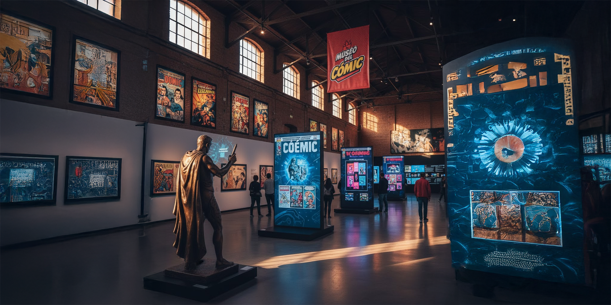

¡Qué alegría tenerte por aquí! Este rincón digital nació de mi fascinación por esos cerebros brillantes que dibujan y cuentan historias en viñetas. Mi idea con este museo es simple: quiero que conozcamos juntos a los diez visionarios más impresionantes del cómic, aquellos que con su arte y su imaginación crearon universos enteros y nos engancharon a millones. Es un pequeño tributo personal para celebrar su genio y, quizás, para que descubras a tu próximo artista favorito. ¡Acompáñame a desvelar sus legados!
